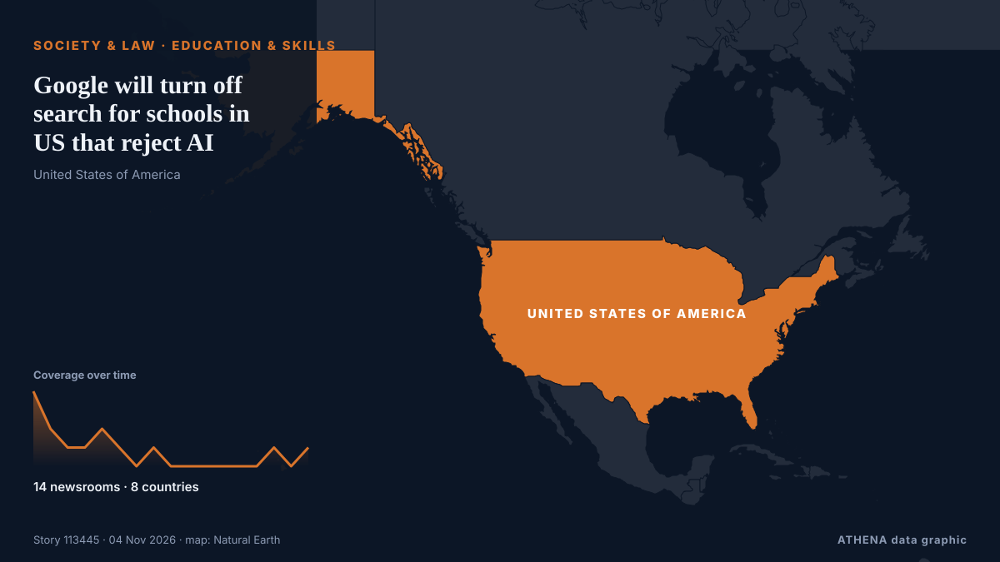

Google will turn off search for schools in US that reject AI

AI features are now a standard part of Google’s commercially available search engine. من The Straits Times
نشرته بشكل مستقل 14 مصدرًا في 8 دول منذ 3 نوفمبر، وأول من نشره TechCrunch؛ والتغطية تتراجع. يقدّر ATHENA الخطر بأنه معتدل (2.5/10)، ويعود ذلك أساسًا إلى خطورة الضرر الموصوف وجودة الأدلة. الثقة 90٪ (مرتفعة)، وعدد المصادر المستقلة المؤكِّدة: 14، بمتوسط موثوقية للمصادر يبلغ 74٪. وسائل الإعلام حسب البلد: الولايات المتحدة (7), هولندا (1), تركيا (1). التغطية: من 3 نوفمبر إلى 4 نوفمبر، 17 ساعة.
لماذا يهم: تغيّر التعديلات القانونية والسياسية الحقوق والواجبات والخدمات العامة لمن تشملهم.
ما الذي تغيّر: 14 تقارير جديدة من 14 غرف أخبار خلال 24 ساعة حتى 4 نوفمبر.
العنوان الأول: Google will let schools disable its AI tools, but not without sacrificing Search
تُعرض العناوين بالإنجليزية كما نُشرت.
نظرة سريعة
اختير وقُيِّم وكُتب وفق منهجية ATHENA المنشورة. لا يتدخل أي محرر في الأحداث بعينها. كيف يُنتَج ›
| 03 Nov 16:30 UTC | 4 |
|---|---|
| 03 Nov 17:30 UTC | 2 |
| 03 Nov 18:30 UTC | 1 |
| 03 Nov 19:30 UTC | 1 |
| 03 Nov 20:30 UTC | 2 |
| 03 Nov 21:30 UTC | 1 |
| 03 Nov 22:30 UTC | 0 |
| 03 Nov 23:30 UTC | 1 |
| 04 Nov 00:30 UTC | 0 |
| 04 Nov 01:30 UTC | 0 |
| 04 Nov 02:30 UTC | 0 |
| 04 Nov 03:30 UTC | 0 |
| 04 Nov 04:30 UTC | 0 |
| 04 Nov 05:30 UTC | 0 |
| 04 Nov 06:30 UTC | 1 |
| 04 Nov 07:30 UTC | 0 |
| 04 Nov 08:30 UTC | 1 |
| 03 Nov 17:30 UTC | 0.0 |
|---|---|
| 03 Nov 18:39 UTC | 1.7 |
| 04 Nov 00:34 UTC | 3.1 |
| 04 Nov 07:17 UTC | 2.5 |
| 04 Nov 09:08 UTC | 2.5 |
لماذا هذه الأرقام
الأهمية
الخطر
الثقة
التغطية — من نشر الخبر ومتى
العنوان كما نُشر · يفتح الأصل- TechCrunch · الولايات المتحدةGoogle will let schools disable its AI tools, but not without sacrificing Search
- The Next Web · هولنداGoogle will switch off Gemini for school students unless schools opt in
- The Verge · الولايات المتحدةGoogle is entirely disabling Search in schools that don’t want AI
- Engadget · الولايات المتحدةGoogle says students in schools that ban AI won't have access to Search
- Forbes Business · الولايات المتحدةGoogle Will Cut Off Search Engine Access To Schools Banning Generative AI
- Ars Technica · الولايات المتحدةGoogle will let schools skip AI tools, but they have to give up search, too
- Anadolu Agency (English) · تركياGoogle to disable Search for schools that block AI tools
- The Guardian · المملكة المتحدةGoogle says there’s no way to use Search without using artificial intelligence
- 9to5Google · الولايات المتحدةGoogle will disable Search for students unless schools accept AI features in ‘Guided Learning’ push
- APA (English) · أذربيجانGoogle to shut off search for schools that opt out of AI
- The Straits Times · سنغافورةGoogle will turn off search for schools in US that reject AI
- CNBC World · الولايات المتحدةGoogle responds to political backlash over removing search from schools that ban AI
- Channels TV · نيجيرياGoogle Will Turn Off Search For Schools That Reject AI
- NDTV · الهندGoogle To Cut Off Search Access For Students At Schools That Reject AI